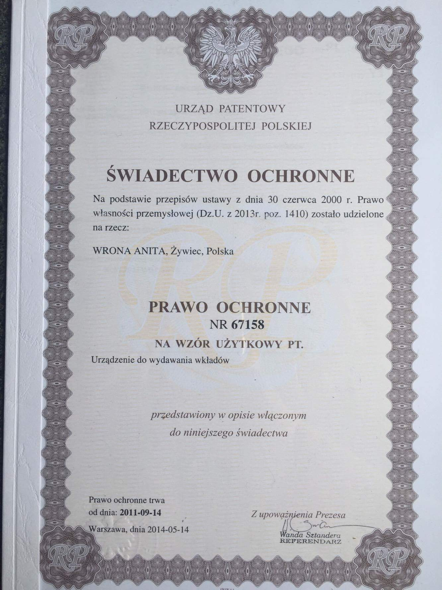

Firma ZNIKEN została założona w 2009 roku przez Anitę Wronę.
Jesteśmy liderem na polskim rynku i jedynym producentem (nie DYSTRYBUTOREM), który produkuje automaty mechaniczne, trwałe, proste w obsłudze, i działające bez prądu i akumulatora, do sprzedawania zniczy, i wkładów.

W 2011 roku staraliśmy się o patent na nasz zniczomat, który jest wynalazkiem technicznym skonstruowany przez naszą firmę.
W 2013 roku Urząd Patentowy RP w Warszawie przyznał nam patent na zniczomaty,dzięki czemu jesteśmy jedyną firmą na terenie całej Polski, która taki posiada.
Działamy także na terenie całej Europy, gdzie już od 2014 roku prowadzimy sprzedasz naszych automatów.
Nawiązaliśmy współpracę z setkami urzędów, gmin i parafii, na terenie których stoją nasze zniczomaty.
Zadowolenie Klientów zaowocowało bardzo dobrą opinią wśród polskich i europejskich użytkowników naszych produktów.